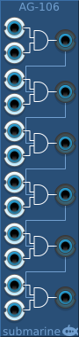

The AG-106 provides 6 two-input AND gates. It is designed to take digital signals, but it will happily accept analog signals.
The voltage range of the digital gates can be configured from the context menu. The device will output at the full range of the configured settings. The inputs will measure a logical high signal anywhere above the midpoint of the configured range.
Any output not connected will be normalled into a third input on the gate below. In this way multi-input gates can be created up to a maximum of 12 inputs.
An input not connected will be ignored.
The AG-104 provides four two-input AND gates in a small form factor. Otherwise functionality is as for the AG-106 above.
The AG-202 provides two four-input polyphonic AND gates in a small form factor. The number of output channels matches the number of channels in the first input.